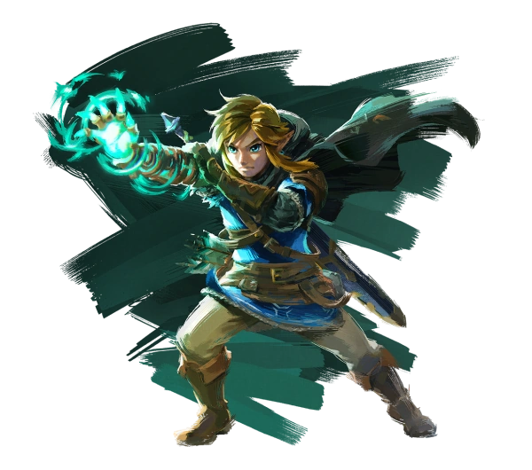

Noticias
'Baldur’s Gate 3', mejor juego de 2023 en los The Game Awards
Baldur’s Gate 3 ha ganado el premio al mejor juego del año en los The Game Awards 2023, la gala considerada como “los Oscar del videojuego”. El aclamado juego de rol desarrollado por el estudio belga Larian Studios ha conseguido un total de seis estatuillas en la ceremonia celebrada esta noche en el Peacock Theater de Los Ángeles (Califonia). Además de llevarse el preciado GOTY (Game of the Year), también ha conseguido los premios a la mejor comunidad, al mejor juego de rol, al mejor multijugador, la mejor interpretación a cargo de Neil Newbon (Astarion) y el premio del público.
Fuente: https://www.lavanguardia.com/tecnologia/videojuegos/20231208/9434926/baldur-gate-3-mejor-juego-2023-the-game-awards-lista-ganadores.html#:~:text=Baldur's%20Gate%203%20ha%20ganado,%E2%80%9Clos%20Oscar%20del%20videojuego%E2%80%9D.
PUBG se convertirá en franquicia, pero revelan polémica decisión

En un reciente comunicado (vía Exputer) Krafton, compañía dueña de PUBG, manifestó su interés en convertir el juego en una franquicia, o sea una base de la que salgan juegos relacionados y otro tipo de contenido. Al respecto, Changhan Kim, director general de la compañía, manifestó el interés que tienen para ampliar la inversión en proyectos relacionados con PUBG y los ingresos continuos que esto podría generar: "la compañía busca construir su propio ecosistema de plataforma convirtiendo PUBG en una franquicia para tener una competitividad inigualable. Específicamente, la compañía planea implementar una estrategia de marca a largo plazo, como expandir la línea de productos basada en PUBG y aumentar el negocio de desarrollo a través de estudios internos y externos, así como subcontratación". Sin embargo, parte de este ambicioso plan expresado por Krafton incluye el uso de nuevas tecnologías, en especial las herramientas de IA. La compañía de PUBG considera que es una oportunidad única para poder sacar sus proyectos adelante y confirma que la IA será parte de sus procesos de desarrollo: "vemos la tecnología de aprendizaje profundo como un 'cambio de juego' en la industria de los videojuegos, así que anunciamos su uso de forma más activa en la etapa de desarrollo. Dado que KRAFTON ya cuenta con las mejores capacidades de investigación y desarrollo de IA del mundo, se espera que sea capaz de proporcionar nuevas experiencias centradas en el usuario, así como eficiencia en la producción".
Fuente: https://www.lavanguardia.com/tecnologia/videojuegos/20231208/9434926/baldur-gate-3-mejor-juego-2023-the-game-awards-lista-ganadores.html#:~:text=Baldur's%20Gate%203%20ha%20ganado,%E2%80%9Clos%20Oscar%20del%20videojuego%E2%80%9D.
Personajes Destacados
The Legend Of Zelda : Link
Link (リンク, Rinku ?, Hylian LHylian IHylian NHylian K en Hylian) es el nombre del protagonista de The Legend of Zelda. Es el Héroe Elegido por las Diosas, portador de la Espada Maestra y representante de la Trifuerza del Valor. Una vez iniciada su aventura, Link se convierte en un héroe legendario después de salvar a Hyrule de las fuerzas malignas ocasionadas por Ganon (también conocido como Ganondorf)
Metroid Prime : Samus Aran
Samus Aran (サムス・アラン, Samusu Aran) es el personaje protagónico de la serie Metroid. Samus es el personaje principal en todos los juegos de la saga excepto en Metroid Prime: Federation Force, en el que ejerce el rol de personaje secundario.